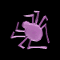

Spiral orb webs are what most people associate with spider webs. They are the large, circular webs that have
a strong resemblance to wheels. They are easily recognizable by their spoke-like segments that meet in the
middle of the web.
Spiders will either wait on the web or hide nearby for their prey to land. If you aren’t quick, you’ll
miss these webs. Orb Weavers typically take their webs down and rebuild it every night..
---------------here------for-------orb------>>>>>>>>>>>>

While they appear messy and disorganized, cobwebs are actually created that way. They’re frequently anchored to the top of a structure and have many different threads hanging down off of it.
<<<<<-------here----for-----cob-------web-------< /p>
Three strands of silk are connected with thread to create a very simple web. While these webs are unique in their design, triangle webs are even more unique in their function. The thread used for these webs is fuzzy and actually entangles and smothers insects. The smothering ability of the web makes up for the lack of an effective bite from these spiders.
-------hover---here-----for-------triangle-----web---------->>>>
These interesting webs take the classic web design and turn it horizontally. You can find these
hammock-like webs draped over grass, bushes, or other structures. Some of these webs lay very flat
over grass, while others are dome-shaped.
The spiders that construct these webs simply
hang upside-down from them and wait to ambush any insects that walk below. Flying insects often hit
the threads and fall down to the spider.
<<<<<<<<<<-----over---here----for---sheet----web
